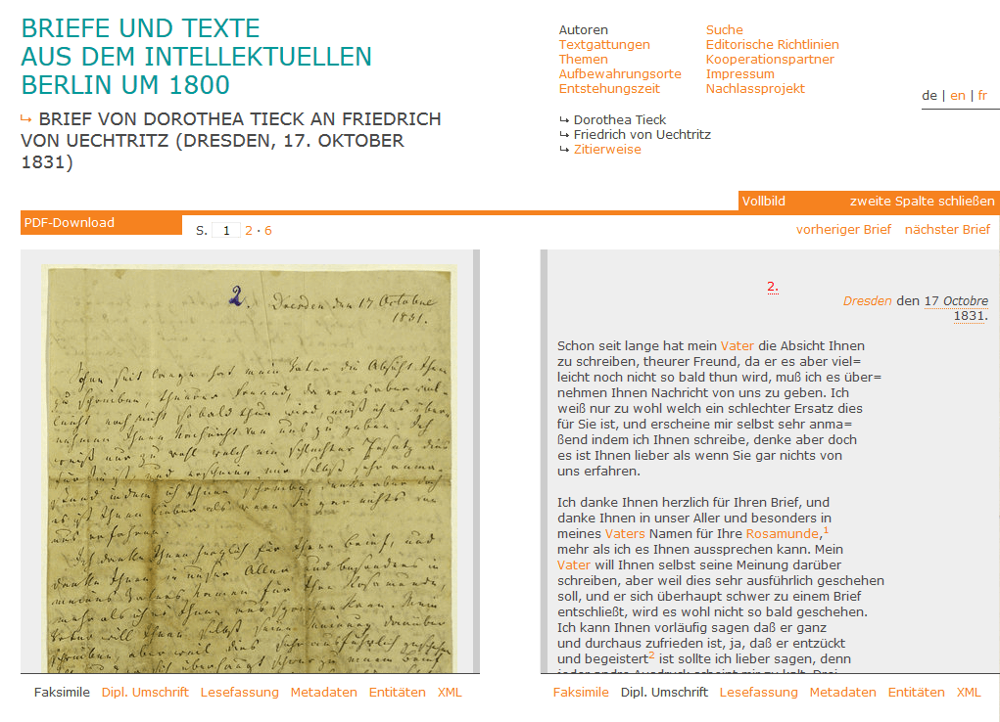

Briefe und Texte aus dem intellektuellen Berlin um 1800
Table of Contents
Abstract
The digital edition “Briefe und Texte aus dem intellektuellen Berlin um 1800” collects letters and texts depicting the intellectual life of the early 19th century Berlin. The transcribed letters and texts are diligently edited and richly annotated with metadata and enriched with authority control data. While an edition specific TEI-XML schema is missing, great effort is made to make the editorial work transparent and accessible. The edition faces some challenges of long time support and availability, but long term access is facilitated with the raw XML data of the digital edition being provided openly licensed and easily accessible for download.
Einleitung
Die hier rezensierte digitale Edition „Briefe und Texte aus dem intellektuellen Berlin um 1800“ weist bereits in ihrem Titel auf eine besondere Ausprägung hin: sie führt verschiedene Textsorten einer Vielzahl von AutorInnen zusammen, der Entstehungszeitraum der Briefe und Texte erstreckt sich dabei über 100 Jahre (1759 bis 1859). In der Auswahl orientiert sich die Edition am Leitthema „intellektuelles Leben im Berlin des späten 18. und frühen 19. Jahrhunderts“ und behandelt insbesondere die Themenbereiche Kulturtransfer durch Einwanderung aus Frankreich (Französische Kultur), die Anfangszeit der Berliner Universität, Netzwerke und Arbeitsprozesse der Literarischen Romantik in Berlin und die Situation von Schriftstellerinnen. Selbsterklärtes Ziel ist es, „[…] die engen Verbindungen der unterschiedlichen Intellektuellenkreise (Universität, Akademien, Vereine, Salons, Verlagshäuser, Zeitschriften) sichtbar zu machen.“1 Im Zentrum dieser Rezension sollen vor allem die digitalen Aspekte der besprochenen Edition stehen, eine Diskussion der ausgewählten Dokumente und ihrer Zusammensetzung (zeitlich, autorInnenbezogen, inhaltlich) im Hinblick auf diese Selbstbeschreibung der Edition wird dabei nicht stattfinden.
Neben Briefen finden sich unter den edierten Texten unter anderem Dramentexte, Erzählungen, Protokolle und Berichte (z. B. aus dem preußischen Innenministerium über die Entwicklung an der Berliner Universität, der heutigen Humboldt-Universität zu Berlin) und Rezensionen. Im Korpus der edierten Texte nehmen die Briefe nach Zahl und Umfang jedoch mit Abstand den größten Anteil ein, so dass im Folgenden den Briefen der Edition besondere Aufmerksamkeit gelten soll. Die Edition ist unter https://www.berliner-intellektuelle.eu/ erreichbar.
Entstanden ist die digitale Edition „Briefe und Texte aus dem intellektuellen Berlin um 1800“ im Rahmen der an der Humboldt-Universität Berlin angesiedelten Nachwuchsgruppe „Berliner Intellektuelle 1800-1830“.2 Von 2010 bis 20153 wurden hier die Netzwerke Berliner Intellektueller als Orte des Kultur- und Wissenstransfers erforscht. Neben zahlreichen weiteren Veröffentlichungen bildet die Transkription umfangreicher Handschriftenbestände und ihre Veröffentlichung als digitale Edition ein wesentliches Ergebnis der Arbeit der Nachwuchsgruppe. Hilfreich wären auf der Webseite detailliertere Informationen zum zeitlichen Rahmen der Er- und Bearbeitung der Edition und ein Hinweis auf den derzeitigen Stand – ist das Projekt noch in Arbeit oder abgeschlossen, sind zukünftig evtl. weitere Arbeiten geplant?
Umfang und Aufbau der Edition
Die ediert vorliegenden Dokumente sind nach den Kategorien Autoren, Textgattungen, Themen, Aufbewahrungsorte und Entstehungszeit strukturiert. Für die Kategorien Autoren und Themen gibt es einleitende bzw. einordnende Texte, die unterschiedlich umfangreich ausfallen. Kleinere Inkonsistenzen gibt es bei den einzelnen Unterseiten zu den Autoren, bei denen einigen Autoren keine Dokumente zugeordnet sind.4
Eine genaue Zahl der edierten Dokumente, wird insgesamt
wie auch in der Auswahl der angebotenen Kategorien (wie
Textgattung, Themen, Autoren usw.) in der
Oberfläche nicht direkt benannt. In Auswertung der zum Download angebotenen
vollständigen TEI-XML-Daten zeigt sich, dass die Edition aus 179 Dokumenten
besteht, 170 davon sind als Briefe gekennzeichnet. Nicht alle davon sind Briefe
im engeren Sinne (d. h. als kommunikativer Akt zwischen zwei oder mehreren
Personen), einige der edierten Briefe sind Literaturbriefe bzw. Rezensionen oder
Teil von Verwaltungsvorgängen (so die bereits erwähnten Protokolle und
Berichte). Die wenigen edierten Texte, die keine Briefe sind, gliedern sich in
literarische Texte (Dramen/Libretti, Erzählungen, Rezensionen) und
Vorlesungsmitschriften/Promotionsschriften. Nach Auswertung der XML-Daten
(Dokumente mit und ohne listBibl in msDesc) war die
knappe Hälfte der Dokumente bisher unveröffentlicht.
In der folgenden Tabelle wird ein Überblick über die edierten Dokumente nach Textgattung gegeben (Dokumente können mehr als einer Textgattung zugeordnet sein):
| Textgattung | Anzahl |
|---|---|
| Briefe | 170 |
| Dramen/Libretti | 3 |
| Erzählungen | 3 |
| Protokolle/Berichte | 25 |
| Vorlesungsmitschriften/Promotionsschriften | 1 |
| Rezensionen | 3 |
Eine Angabe zur Menge der ediert vorliegenden Dokumente direkt in der Oberfläche der Edition und jeweils auf den Unterseiten zu einzelnen Kategorien sowie in den Registern wäre wünschenswert, um den NutzerInnen schneller und einfacher einen Eindruck von Umfang und Zusammensetzung der angebotenen Texte zu geben. Generell stellt sich für digitale Editionen die Aufgabe und Herausforderung, Struktur und Umfang klar zu kommunizieren und möglichst auch über die Gestaltung des User Interface direkt erfahrbar zu machen.
Darstellung und editorische Entscheidungen
Standardmäßig erfolgt die Darstellung der edierten Dokumente zweispaltig, wobei für jede Spalte aus folgenden Daten und Ansichten ausgewählt werden kann (vgl. die Abb. 1):
- eine seitengetreue Ansicht des Faksimiles,
- eine Transkription in diplomatischer Umschrift mit Stellenkommentar,
- eine Lesefassung,
- umfangreiche Metadaten, u. a. mit Angaben zu BearbeiterInnen, Überlieferungsgeschichte, Materialität und editorischen Besonderheiten,
- eine Auflistung sämtlicher im Dokument erwähnter Entitäten der Typen Personen, Gruppen, Orte und Werke,
- TEI-XML-Fragment der angezeigten Seite (mit Möglichkeit zur Anzeige der gesamten XML-Datei)
Beim Mouse-Over ermöglicht die Faksimileansicht einen automatischen Zoom und kann durch einfachen Mausklick als Einzelbild angezeigt (und entsprechend gespeichert) werden. In mehrseitigen Dokumenten erfolgt die Navigation – die Anzeige erfolgt sowohl in der diplomatischen Umschrift als auch in der Lesefassung seitengetreu – durch Pfeiltasten oder Auswahl der entsprechenden Seitenzahl, dabei wird das zugehörige Faksimile zur neuen Seite geladen.5 Hinweise zur archivarischen Herkunft und rechtlichen Verwendung sind zu jedem Faksimile vermerkt.

Umfangreich und sehr ausführlich sind die in der Ansicht Metadaten gezeigten Informationen. Mit Angaben zu den verantwortlichen BearbeiterInnen und Hinweisen über dokumentspezifische editorische Besonderheiten, die nicht durch die projektweiten editorischen Richtlinien abgedeckt sind, wird der Editionsprozess transparent und gut nachvollziehbar gemacht. Auch die Daten zu Entstehung, Geschichte und Materialität der edierten Manuskripte sowie den identifizierbaren Schreibhänden sind sehr detailliert. In den Metadaten gibt es für jedes Dokument auch die wichtige Datierung des letzten Bearbeitungsstandes.
Ebenso sorgfältig umgesetzt ist die semantische Erschließung explizit erwähnter und erschlossener Entitäten in den Dokumenten. Die sowohl in der diplomatischen Umschrift wie in der Lesefassung gekennzeichneten und in die Register verlinkten Entitäten umfassen Personen, Personengruppen, Orte und Werke. In der Ansicht der Entitäten werden dabei nochmals sämtliche im Dokument identifizierten Entitäten nach Typ und Ort (Text oder Kommentar) aufgelistet und bei Vorkommen auf der gerade aktuell angezeigten Seite gesondert markiert.
Für jede Seite ist außerdem die Ansicht des TEI-XML zur aktuellen Seite verfügbar (als XML-Fragment). Hier sind dann über die Darstellung in der diplomatischen Umschrift hinaus die editorischen Bestimmungen der transkribierten Phänomenen genauer erkennbar. Auch das TEI-XML zum gesamten Dokument wird hier zum Download angeboten.
Für jedes Dokument wird ein PDF zum Download (bzw. Ausdruck) angeboten. Im PDF folgt die Textdarstellung weitgehend der Lesefassung, die Differenzen in der Darstellung ergeben sich weitgehend aus den unterschiedlichen medialen Voraussetzungen. Erfasste Entitäten sind in den angebotenen PDFs ebenso vermerkt wie Stellenkommentare.
Sehr hilfreich und wichtig ist der für jedes Dokument angegebene Vorschlag für die Zitierweise, er ist auch in den angebotenen PDFs enthalten. Die URLs für die Verlinkung fallen kurz und lesbar aus, grundsätzlich erfolgt der Hinweis zur Zitierweise trotz seitenbasierter Anzeige jedoch immer auf das gesamte Dokument.
Im Hinblick auf den Korrespondenz-Schwerpunkt bei den edierten
Dokumenten ist die Einbettung der einzelnen Briefe in den Korrespondenzkontext
hervorzuheben. Von einem angezeigten Brief aus kann über die entsprechende
Auswahl zum nächsten bzw. vorherigen Brief innerhalb des Briefwechsels zwischen
zwei KorrespondentInnen gewechselt werden. Abgebildet sind die Informationen zum
Korrespondenzkontext in TEI über die Elemente correspDesc,
correspAction und correspContext.6
Dies ermöglicht auch den einfachen Nachweis der edierten Briefe im Webservice
correspSearch.7
Editionsrichtlinien und diplomatische Umschrift
Die Editionsrichtlinien sind leicht auffindbar und direkt auf der Startseite verlinkt.8 Sie geben zunächst einen kurzen Überblick zu Aufbau, Korpus und Quellen und darüber hinaus detaillierte Auskunft über die editorischen Entscheidungen im Einzelnen. Aufgeschlüsselt für die Lesefassung, PDF-Darstellung und diplomatische Umschrift wird hier der editorische Umgang mit einzelnen Phänomenen beschrieben und begründet.
Besonders zu begrüßen sind hierbei die Konzeption und Umsetzung
der diplomatischen Umschrift. So werden komplexere Anordnungen/Abstände in
der diplomatischen Umschrift beispielsweise reduziert und verschiedene Arten
der Streichungen auf eine einheitliche Darstellung angeglichen. Der
tatsächliche Befund wird jedoch im TEI-XML genau erfasst (z. B.
del/@rend="overwritten",
del/@rend="strikethrough",
del/@rend="erasure"). Im Hinblick auf die zur Verfügung
gestellten qualitativ hochwertigen Faksimiles ist dies eine gute
Entscheidung. Im zum Download bzw. zur Anzeige angebotenen XML werden so
Details festgehalten, für eine effiziente und mit vertretbarem
(entwicklerischem) Aufwand realisierbare webbasierte Darstellung aber
Vereinfachungen in der Anzeige bestimmter Phänomene vorgenommen. Für die
Darstellung der Texte im Browser wurde daher eine pragmatische und gelungene
Abwägung zwischen philologischer Tradition und den Möglichkeiten des
digitalen Mediums vorgenommen. Der Blick auf das Faksimile und den genauen
editorischen Befund im XML ermöglicht weiterhin jede philologische
Feinarbeit, diese editorische Entscheidung wird dem Medium der digitalen
Edition so gerechter als ein millimetergenauer „digitaler Nachbau“ eines
analogen Schriftträgers, den das Faksimile im Zweifelsfall sowieso exakter
abbildet.9 Darüber hinaus wird die
diplomatische Umschrift so einfacher nutzbar, ohne komplexe
editionsspezifische Systeme diakritischer Zeichen erlernen zu müssen.
TEI-Modellierung, Kodierungsrichtlinien und Schema
Neben den editorischen Richtlinien wird im Rahmen der Edition
eine umfangreiche Dokumentation der Kodierungsrichtlinien zur Modellierung
der Daten in TEI-XML zur Verfügung gestellt.10
Diese Kodierungsrichtlinien geben ausführlich Auskunft über die
editionsspezifische Verwendung von TEI-Elementen, um alle zu edierenden
Dokumente mit ihren Phänomenen abbilden zu können. Sehr ausführlich sind
dabei nicht nur die Informationen zur Transkription, sondern auch zu Aufbau
und Strukturierung der Metadaten im teiHeader. In den
Richtlinien gut angelegt und im Hinblick auf die XML-Daten und die
Weboberfläche auch in die Praxis umgesetzt ist die genaue und transparente
Verzeichnung editorischer Mitarbeit und von Bearbeitungen. Einzelne
Verantwortlichkeiten werden dabei mit einer kurzen Beschreibung in einem
respStmt notiert, auch einzelne Bearbeitungsschritte der
Transkription in XML können anhand gut gepflegter Angaben in
revisionDesc nachvollzogen werden. Der kollaborative
Charakter der digitalen Edition wird dabei besonders nachvollziehbar.
Ansonsten werden, soweit in den Richtlinien ersichtlich, die
einschlägigen und detaillierten TEI-XML-Kodierungen verwendet. Das ergibt
sich auch beim Blick in den TEI-XML-Code: Der Text ist jeweils genau
transkribiert. Alle Textstrukturen, Ergänzungen und Änderungen (wie
Ersetzungen, Streichungen etc., siehe oben) werden mit den passenden
TEI-Auszeichnungen genau festgehalten. Auch Datumsangaben, Personen- und
Ortsnamen sowie Werktitel sind entsprechend kodiert und verweisen auf den
entsprechenden Registereintrag. Sogar Referenzausdrücke, wie „Vater“, sind
mit dem korrekten Tag rs eigens markiert. Auch die Register
selbst liegen in TEI-XML vor. Einzig die Datumskodierung11
ist – insbesondere vor dem damaligen Hintergrund – nicht standardmäßig
gelöst. So werden für Zeitspannen nicht die eigentlich verfügbaren
TEI-Attribute @from und @to verwendet, sondern das
„Extended Date/Time Format“ (EDTF) eingesetzt. Dieses lag im Projektzeitraum
nur als Entwurf vor und wurde erst 2019 in den ISO-Standard 8601
integriert.12 Zwar ermöglicht EDTF auf der einen Seite sehr präzise Angaben von
(insbesondere teilweise unbekannten) Daten, auf der anderen Seite erschwert
es aber möglicherweise die Nachnutzung und automatische Auswertung von so
kodierten Datumsangaben, da es erst seit relativ kurzer Zeit ein Standard
ist.
Vor dem Hintergrund der ausführlichen Kodierungsrichtlinien
wären allerdings auch ein editionsspezifisches Schema und ein expliziter
Hinweis auf die verwendete TEI P5-Version wünschenswert gewesen. Das wird
insbesondere deutlich, wenn man die der Edition zugrundeliegenden
TEI-XML-Daten herunterlädt (siehe dazu weiter unten) und sie mit einem TEI
P5-Schema validiert. Da die digitale Edition schon „älter“ ist, muss auch
eine ältere Version des TEI P5-Schemas gewählt werden, z. B. die Version
2.9.1, die vom 15. Oktober 2015 datiert und damit die Version vor dem
letzten Stand der Kodierungsrichtlinien (Februar 2016) ist.13 Hier fallen viele
Validierungsfehler auf. Schaut man sich einen Brief bespielhaft an, z. B.
denjenigen von Dorothea Tieck an Friedrich von Uechtritz vom 15. Juli
183114, kann man die
Validierungsfehler besser einordnen: So entstehen die meisten Fehler im
teiHeader der Datei, genauer gesagt zum einen bei der
Übersetzung der archivalischen Überlieferung in msDesc und zum
anderen in der „Editorial Declaration“ (editorialDecl) von
correction und hyphenation. Hier wurden
seg-Elemente gewählt, um die deutsche, französische und
englische Version zu notieren. Das Element ist aber in TEI P5 2.9.1 an
diesen Stellen nicht erlaubt. Im Fall von correction und
hyphenation hätte p zur Verfügung gestanden,
im Falle von institution, collection etc. gab es
in 2.9.1 noch keine Unterelemente, außer g. Die
Kodierungsrichtlinien geben hierzu leider keine Hinweise. Ansonsten sind als
Validierungsfehler im body ein Attribut @hand in
note zu vermerken, sowie ein closer in
p. Beide Abweichungen von den TEI-Richtlinien sind
sinnvoll. Ersteres ist auch in den Kodierungsrichtlinien dokumentiert und in
den neuen Versionen der TEI-Richtlinien mittlerweile auch erlaubt. Dass
Abschlussformeln in Briefen, die in Paragraphen beginnen, nicht TEI-konform
kodiert werden können, ist ein bekanntes Problem.15 Bei einem kursorischen Überblick
über die Validierungsfehler insgesamt stellt man fest, dass anscheinend die
genannten Probleme im teiHeader, sowie note/@hand
und closer den Großteil der Fehlermeldungen ausmachen. Eine
explizite Dokumentation dieser Abweichungen in den Kodierungsrichtlinien und
ein editionsspezifisches Schema wären hier wünschenswert gewesen.
Insgesamt jedoch ist die Dokumentation der editorischen Prinzipien wie auch der Kodierungsrichtlinien sehr ausführlich und gelungen. Für die „Briefe und Texte aus dem intellektuellen Berlin um 1800“ wird damit sowohl ein hoher Grad editorischer Transparenz erreicht als auch die Grundlage für eine Nachnutzung durch Dritte gelegt.
Oberfläche und digitale Funktionalität
Die gesamte Oberfläche der Edition ist mehrsprachig (Deutsch/Englisch/Französisch) verfügbar, dies schließt auch die editorischen Informationen der Metadaten (Überlieferung, Schreibhände etc.) ein, die aufwändig in jedem TEI-XML-Dokument hinterlegt wurden. Mit einer übersichtlichen und graphisch reduzierten Gestaltung wirkt die Oberfläche klar strukturiert, die Darstellung der wesentlichen Funktionen (edierte Dokumente in den verschiedenen Ansichten, Register) ist leicht zu erfassen und gut nutzbar. Technisch ist die Ansicht der edierten Dokumente JavaScript-basiert mit der Bibliothek jQuery umgesetzt. Die Schriftgröße fällt insgesamt etwas klein aus und Strukturierungen und Gewichtungen (z. B. durch Überschriften) werden fast nur durch farbliche Gestaltung mit zum Teil niedrigem Kontrast abgebildet. Leider lässt sich die Schriftgröße mit den browsereigenen Zoommöglichkeiten auch nicht vergrößern, ohne dass die Ansicht der edierten Dokumente eingeschränkt bzw. abgeschnitten wird (vermutlich durch die Implementation der Bildlaufleisten/Scrollbars mit JavaScript). Zusätzlich zur klaren Gestaltung der Oberfläche wäre es deshalb wünschenswert, wenn diese Aspekte der Usability und Barrierefreiheit bei der Entwicklung des User Interfaces stärker einbezogen würden. Auf kleineren Bildschirmen bzw. Handydisplays ist die Seite nutzbar, jedoch nicht gesondert angepasst. Text und Menü werden hier sehr klein dargestellt, so dass Navigation und Interaktion eher umständlich geraten.16
Eine Volltextsuche17 erschließt den Volltext sowie editorische Metadaten und Kommentare. Auch alle Indizes bzw. Register können durchsucht werden. Leider funktioniert die Volltextsuche nicht immer, öfters treten für bestimmte Suchbegriffe Fehler auf18 und auch die Erschließung des gesamten handschriftlichen Nachlasses August Boeckhs, das als Teilprojekt der Edition bezeichnet wird19 führt zu einer Fehlerseite.20 Für ein digitales Editionsprojekt stellt eine funktionierende (Volltext-)Suche eigentlich eine entscheidende Funktion dar, bildet sie doch eine wichtige Erweiterung der Zugangsmöglichkeiten gegenüber gedruckten Editionen.
Registerdaten zu Personen und Orten sind fast vollständig mit Normdaten versehen. Für Personen werden dabei Identifier der PND – Personennamendatei (als kompatibler Vorläufer der GND – Gemeinsame Normdatei) verwendet. In der Registeransicht können so für die Personeneinträge via BEACON-Dateien zahlreiche Links zu weiteren Informationsquellen angeboten werden. Auch vom Projekt selber wird eine BEACON-Datei zur Verfügung gestellt.21 Diese ist im Rahmen des Projekts selbst nicht dokumentiert, weitere maschinenlesbare Schnittstellen sind nicht verfügbar. Für Ortsangaben werden als Identifier die Daten von GeoNames genutzt.
Im Hinblick auf die Zielsetzung des Vorhabens, Kommunikationsstrategien und Netzwerke zu untersuchen, bilden insbesondere der umfangreiche Gruppenindex22 und die Modellierung gegenseitiger Beziehungen von Personen23 einen wichtigen Bestandteil der durch die Edition erarbeiteten Daten.
Nachnutzung & Langzeitverfügbarkeit
Alle XML-Daten der Edition liegen für die edierten Dokumente und die zugehörigen Indizes zum Download als ZIP-Dateien vor (neben der oben bereits geschilderten Einzelansicht des Dokument-XML).24 Diese Möglichkeit zum Gesamtdownload der XML-Daten ist sehr zu begrüßen und erleichtert eine mögliche Weiterverwendung durch Dritte ungemein. Auch die klare Lizenzierung25 unter CC BY 3.0 26 erfüllt die Voraussetzung für eine freie Weiterverwendung der Daten. Die Möglichkeit eines Gesamtdownloads und die klare, offene Lizenzierung sind besonders hervorzuheben, da dies leider immer noch nicht selbstverständlich ist. Wünschenswert wäre darüber hinaus lediglich noch die zusätzliche Bereitstellung dieses Downloads über ein Open-Access-Repositorium wie z. B. Zenodo.
Wie oben bereits beschrieben, sind die editorischen Richtlinien und die verwendeten Kodierungsstandard ausführlich und gut dokumentiert. Darüber hinaus gibt es leider auf den Webseiten der Edition keine Angaben zum aktuellen Arbeitsstand und eventuellen weiteren Planungen. So bleibt unklar, ob die Edition tatsächlich abgeschlossen ist (insofern dies für eine digitale Edition so eindeutig überhaupt möglich ist), in welchem Rahmen technische Wartung und Maßnahmen für die Langzeitverfügbarkeit stattfinden und wer dafür nach dem Abschluss des Projekts der Nachwuchsgruppe „Berliner Intellektuelle 1800-1830“ an der Humboldt-Universität Berlin verantwortlich ist.
Fazit
In der digitalen Edition „Briefe und Texte aus dem intellektuellen Berlin um 1800“ sind sorgfältig edierte Dokumente gesammelt, welche kommunikative Praxen und Strategien von SchriftstellerInnen und Intellektuellen vor dem Hintergrund der preußischen Reformzeit veranschaulichen. Die transparente Dokumentation der editorischen Arbeit, die umfangreiche Erschließung mit Normdaten und den sehr umfangreichen Hinweisen zur digitalen Methodik und Modellierung sind in dieser Kombination vorbildhaft für digitale Editionsprojekte. Allerdings fehlt ein editionsspezifisches TEI-XML-Schema, das auch die aus Projektsicht notwendigen Abweichungen enthält.
Wünschenswert wären darüber hinaus genauere Angaben zur zeitlichen Einordnung und zum Problemfeld der Langzeitverfügbarkeit. Da die Modalitäten von Aktualität und Verfügbarkeit bei einer digitalen Edition anders sind als bei einer gedruckten sind klare, leicht auffindbare Informationen in welchem Stadium des „Lebenszyklus“27 einer digitalen Edition sich eine konkrete Edition befindet umso wichtiger. Aus den für diese Edition angesprochenen kleineren Problemen in Teilfunktionen (Suche, Unterprojekte) ergibt sich zwangsläufig die Frage, ob bzw. in welchem Umfang und durch wen nach dem Abschluss des Projektes und der Förderung noch technische Betreuung und Support für den laufenden Weiterbetrieb gewährleistet sind. Es ist deshalb sehr zu empfehlen, die entsprechenden Angaben (zu Status, Langzeitverfügbarkeit, Zuständigkeit etc.) auf den Webseiten nach Möglichkeit klar zu präsentieren. Mit dem Übergang vieler digitaler Editionen in einen abgeschlossenen Zustand wird sich dieses Problem in den nächsten Jahren generell und vermehrt stellen.
Ungeachtet dessen sind die der Edition zugrunde liegenden Daten sehr gut dokumentiert und verfügbar. Mit reichhaltigen Metadaten, der Verwendung von Normdaten, einem gut dokumentierten interoperablen Vokabular und klarer, offener Lizenzierung und Bereitstellung der Daten sind wesentliche Prinzipien für einen offenen und nachhaltigen Zugang und die Nachnutzung der hier erarbeiteten (Forschungs-)Daten28 verwirklicht.
Notes
- https://www.berliner-intellektuelle.eu/?de, abgerufen am 24.11.2019. ↑
- https://web.archive.org/web/20191201190506/https://www.literatur.hu-berlin.de/de/berliner-intellektuelle-1800-1830. ↑
- Vgl. ebd. ↑
- Vgl. z. B. https://web.archive.org/web/20180215063013/https://www.berliner-intellektuelle.eu/author?p0145+de. ↑
- Die auf https://web.archive.org/web/20191127214018/https://www.berliner-intellektuelle.eu/about?de erwähnte Navigation „mittels der Pfeiltasten der Tastatur“ funktionierte zum Zeitpunkt der Rezension allerdings nur unter Google Chrome und nicht mit Mozilla Firefox. ↑
- Vgl. https://web.archive.org/web/20191129213117/https://www.tei-c.org/release/doc/tei-p5-doc/en/html/HD.html#HD44CD. ↑
- http://correspSearch.net; archiviertes Suchergebnis siehe https://web.archive.org/web/20191129214802/https://correspsearch.net/search.xql?correspondent=all&publication=BTIB&l=en. ↑
- https://web.archive.org/web/20191129220427/https://www.berliner-intellektuelle.eu/about?de. ↑
-
Zwei problematische Beispiele seien an
dieser Stelle kurz genannt: schräg verlaufender Text (nur über komplexe
CSS-Anweisungen, SVG oder
canvas-Elemente realisierbar) und Marginalien, die am Seitenrand gedreht oder evtl. sogar über Kopf eingetragen sind (da der Monitor – im Gegensatz zum Papier – meist nicht ohne weiteres drehbar ist, müsste die Lesbarkeit über Tooltips oder ähnliches gewährleistet werden). ↑ - https://web.archive.org/web/20191130110926/https://www.berliner-intellektuelle.eu/encoding-guidelines.pdf. ↑
- Vgl. den Abschnitt 5.1 Dates der Kodierungsrichtlinien (S. 53 bis 55), https://web.archive.org/web/20191130110926/https://www.berliner-intellektuelle.eu/encoding-guidelines.pdf. ↑
- Vgl. https://www.loc.gov/standards/datetime/; insbesondere: https://web.archive.org/web/20200307193911/https://www.loc.gov/standards/datetime/background.html. ↑
- Validierungen mit vorangehenden Versionen, die in den Projektlaufzeit erschienen, z. B. Version 1.9.1 und 2.7.0 ergaben keine signifikanten anderen Ergebnisse. ↑
- Brief von Dorothea Tieck an Friedrich von Uechtritz (Dresden, 15. Juli 1831). Hrsg. v. Sophia Zeil. In: „Briefe und Texte aus dem intellektuellen Berlin um 1800“. Hrsg. v. Anne Baillot. Berlin: Humboldt-Universität zu Berlin. http://www.berliner-intellektuelle.eu/manuscript?Brief01DorotheaTieckanUechtritz. Stand: 5. August 2015, abgerufen am 6. Juni 2020. ↑
- Vgl. hierzu Christian Forney, Susanne Haaf, Linda Kirsten: Letter Openers and Closers. In: Encoding Correspondence. A Manual for Encoding Letters and Postcards in TEI-XML and DTABf. Edited by Stefan Dumont, Susanne Haaf, and Sabine Seifert. Berlin 2019–2020. URL: https://encoding-correspondence.bbaw.de/v1/openers-closers.html (abgerufen am 6. Juni 2020). ↑
- Es stellt sich hier aber die generelle Frage, welche Funktionen und Ansichten einer digitalen Edition für die mobile Ansicht sinnvoll und mit vertretbarem Aufwand darstellbar sind. ↑
- https://web.archive.org/web/20191201115800/https://www.berliner-intellektuelle.eu/search?de. ↑
- So ergibt z. B. die Suche nach „haus“ oder „text“ einen Fehler, bei dem die Ergebnisseite nicht angezeigt wird oder aber HTML-Quelltext vermischt mit Server-Statusmeldungen ausgeliefert wird (vgl. z. B. https://web.archive.org/web/20191201104123/https://www.berliner-intellektuelle.eu/results?index=f&query1=haus&word=1&language=de). ↑
- https://web.archive.org/web/20191201121447/https://www.berliner-intellektuelle.eu/author?p0178+de. ↑
- https://web.archive.org/web/20191126172617/https://www.berliner-intellektuelle.eu/boeckh/. ↑
- https://web.archive.org/web/20191201181501/https://www.berliner-intellektuelle.eu/beacon-pnd.txt. ↑
- https://web.archive.org/web/20191202185945/https://www.berliner-intellektuelle.eu/index?g. ↑
-
Vgl. den Abschnitt zu
relationGrp,relationder Kodierungsrichtlinien (S. 49f.), https://web.archive.org/web/20191130110926/https://www.berliner-intellektuelle.eu/encoding-guidelines.pdf. ↑ - Vgl. Abschnitt Daten auf https://web.archive.org/web/20191127214018/https://www.berliner-intellektuelle.eu/about?de. ↑
-
Neben den Angaben auf der Webseite enthält
auch jede XML-Datei mit
availability/licencedie entsprechenden Angaben. ↑ - Creative Commons Namensnennung 3.0 Deutschland. ↑
- Als mögliche Bestandteile seien hier nur kurz genannt: Planung/Modellierung, Bearbeitung, Betaversionen, Veröffentlichung, inkrementelle Weiterentwicklung, dauerhafte Wartung mit Fehlerbehebung, Archivierung. ↑
- Vgl. z. B. die FAIR Principles: https://web.archive.org/web/20191202184853/https://www.go-fair.org/fair-principles/. ↑
@article{berliner-intellektuelle,
author = {Grabsch, Sascha},
title = {Briefe und Texte aus dem intellektuellen Berlin um 1800},
journal = {RIDE – A review journal for digital editions and resources},
number = {12},
year = {2020},
doi = {10.18716/ride.a.12.1},
url = {https://doi.org/10.18716/ride.a.12.1},
}TY - JOUR
AU - Grabsch, Sascha
TI - Briefe und Texte aus dem intellektuellen Berlin um 1800
T2 - RIDE – A review journal for digital editions and resources
IS - 12
PY - 2020
DA - 2020/07
DO - 10.18716/ride.a.12.1
UR - https://doi.org/10.18716/ride.a.12.1
PB - Institut für Dokumentologie und Editorik e.V.
LA - de
ER - Grabsch, S. (2020). Briefe und Texte aus dem intellektuellen Berlin um 1800. RIDE – A review journal for digital editions and resources, (12). https://doi.org/10.18716/ride.a.12.1Grabsch, Sascha. "Briefe und Texte aus dem intellektuellen Berlin um 1800." RIDE – A review journal for digital editions and resources, no. 12, 2020. https://doi.org/10.18716/ride.a.12.1.Grabsch, Sascha. "Briefe und Texte aus dem intellektuellen Berlin um 1800." RIDE – A review journal for digital editions and resources, no. 12 (2020). https://doi.org/10.18716/ride.a.12.1.